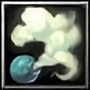
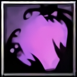

Introduction
"Both sides of war tend to avoid fighting in the night because 'she' wanders around.." - A Survivor of Empire War
Assassin is a damage dealer class that is focused on casting skills from melee to mid range. She is excellent at dealing both AoE and single target damage. With her, you don’t have to worry about getting aggroed since she has a unique skill called Dark Shroud, which allows her to be invisible all the time. Her playstyle involves short combo rotations and backstabbing.
Abilities
[D] Dark Shroud

[Proc Co-efficient]: 1
[Passive]
Ability to meld into darkness and assassinate effortlessly. ∴ Allows all skills to critically strike ∴ Enters stealth if out of combat for 2.5 seconds ∴ Backstabbing enemies while stealthed deals AGI X 5 bonus damage ∴ Reduces damage taken by 30% while stealthed
[Toggle]
∴ TOGGLE OFF: Enable invisibility ∴ TOGGLE ON: Disable invisibility
[Passive]
Ability to meld into darkness and assassinate effortlessly. ∴ Allows all skills to critically strike ∴ Enters stealth if out of combat for 2.5 seconds ∴ Backstabbing enemies while stealthed deals AGI X 5 bonus damage ∴ Reduces damage taken by 30% while stealthed
[Toggle]
∴ TOGGLE OFF: Enable invisibility ∴ TOGGLE ON: Disable invisibility





Equipments
These are the recommended equipments.
Strategies
These are the strategies.